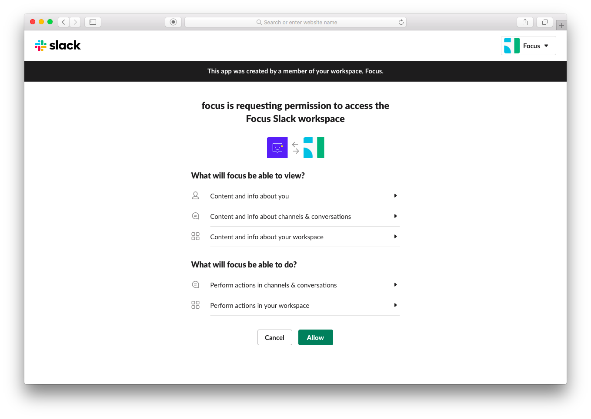
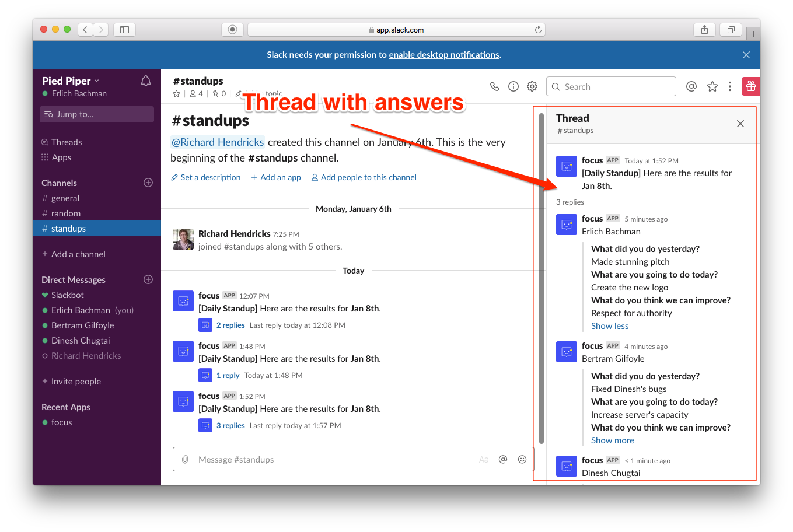

How to install and use Focus bot for Slack
Important!
Please use the same email address on Focus that you use on Slack.
For teams that have already used Focus, you will add the Focus bot to your existed Focus account. Make sure your email address matches the one you use in Slack.
If you haven't registered at Focus or your email address at Focus doesn't match the one you use in Slack, adding the Focus bot to your Slack workspace creates the new workspace at Focus.
User's email address on Slack = User's email address on Focus
Step 1
Add Focus bot in your Slack team by clicking the button 'Add to Slack’.
You can click the "Add to Slack" button either on the Slack App Directory or in the Integrations menu in Focus.
Step 2
Allow the bot installation in Slack.
Step 3
Boom! That’s all.
Congratulations! Focus bot was installed in your Slack workspace.
Step 4 (invite your teammates)
After that, you can invite your teammates to Focus. Make sure the email addresses match the ones you use in Slack.
Focus sends your team notifications when it's time for daily check-in or weekly plan according to the schedule in settings.
By default, you have 3 active campaigns at Focus: daily check-ins, weekly plans, and weekly updates. If you want to change something (time, questions, participants) or turn off notifications, you can easily manage it in the Settings menu (daily check-ins, weekly updates, weekly plans).
Default settings: Focus sends a DM to everyone when it's time to share a check-in or an update; the administrator, who installed the Focus bot, will get all responses.
Check-in campaigns settings
To edit bot's settings, you should use the Settings menu. There are settings for all campaigns: daily check-ins, weekly updates, weekly plans, and icebreakers. Also, you can create your own campaigns like Monthly Retrospective, Backlog Grooming, or any other. To do that, click on the button “Create Campaign” and follow the form.
What can you change in Focus bot settings?
– Choose channels or users who will participate in the campaign. By default, everyone participates.
– Choose a channel or a user who will get team reports
– Choose the type of check-ins: common or asynchronous check-ins
– Change the time and questions
Here is the section for managing bot's settings
Status shows the bot status. If you want to turn the bot off, just click on the status to switch the bot.
Participants: users or channels for the campaign. You can choose specific users for participation in the check-in or update. If you choose a public channel, then everyone in that channel will get notifications about check-in. In this case, please add the Focus bot to this channel.
Delivery results: You can receive reports with check-ins or weekly updates in direct messages for users or in public channels. Specify users and/or channels whom bot will send reports in the Delivery results section. Just click on the button ‘Choose channels’ and specify it. If you choose public channel for reports, please add the Focus bot to this channel.
Asynchronous Check-ins: Make Asynchronous Check-ins or Updates active, if you want to run this type of event. If Asynchronous Check-ins is disabled then Classic Check-in works. The same is actual for Asynchronous Weekly Updates or Plans.
By default, the bot runs Classic Check-in when all users get questions at the same time. If you want to manage check-ins for the team in different timezones you might choose Asynchronous Check-ins. In Asynchronous Check-ins, the bot will send the questions in the same LOCAL time.
Example for the team that works in different timezones (New York, San Francisco, London):
Check-in time in settings: 10 am
Head office: New York
Classic Check-in begins in NY time:
- 10 am in NY (UTC-5)
- 7 am in SF (UTC-8)
- 3 pm in London (UTC+0)
Asynchronous Check-ins begins in:
- 10 am in NY
- 10 am in SF
- 10 am in London
Check-in or Update results
Here is the picture of the check-in in Slack
You can receive check-in results in Slack (if you specified it on Settings) and in Focus web app.
Daily Check-ins settings in Focus
Weekly Updates settings in Focus
OKRs settings
If you create Objectives at Focus, the Focus bot will send notifications when someone updates OKRs (Objective and Key Results). It helps to sync the team and focus on the most important things. To use it, please specify a public channel for OKRs notifications and add the Focus bot to the channel.
Also, the bot can remind users who didn’t update their OKRs last week or last 2 weeks.